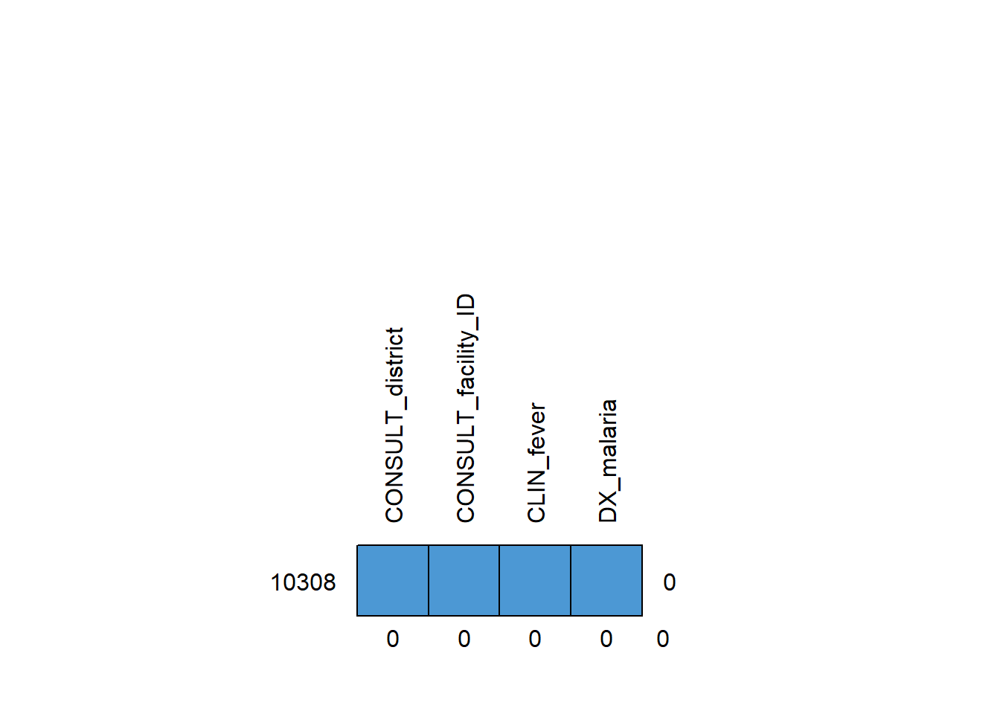

# Write your code hereData Science for Public Health - Day 2 - Session 1
1 Introduction
TBD
2 Malaria research questions
Research questions in an enumerated list
3 Dataset description
Information about the consultations of 10,308 children [1 day - 59 months] from 18 facilities (dispensaries and health centres) in Kaliua District, Sengerema District and Tanga District, Tanzania. Data were collected using ODK (ODK Collect, ODK Central) between start date and end date. Data were made available by IHI and Swiss TPH and the Tools for Integrated Management of Childhood Illness (TIMCI) project. Data are stored in dataset1.dta.
3.1 Data collection
Research assistants recorded the following information from different sources:
- from the caregiver:
- sociodemographic information
- information on treatment received before consultation
- clinical presentation (variables starting with the suffix CLIN)
- laboratory investigations (variables starting with the suffix TEST)
- diagnosis (variables starting with the suffix DX)
- prescribed medication (variables starting with the suffix RX)
- referral advice will be extracted from clinical notes and / or facility registers (variables starting with the suffix MGMT).
Research assistants sought clarification from healthcare providers only in cases where these variables were not clear from the records.
3.2 Data cleaning and data de-identification
Personally identifiable information (PII) were removed.
3.3 Dataset structure
Load the data and show the structure of your dataset
3.4 Codebook
4 Familiarise with the dataset
4.1 Import the data
Read the dataset and store it into a dataframe called df.
Tip
Refer to previous session
# A tibble: 5 x 2
child_ID CONSULT_district
<dbl> <dbl+lbl>
1 1 1 [1]
2 2 1 [1]
3 3 1 [1]
4 4 1 [1]
5 5 1 [1]4.2 Structure of the data
Examine the structure of the data, including variable names, labels.
Tip
- Stata: use the codebook function
- R: use the skim function from the
skimrpackage
# Write your code here. codebook
-------------------------------------------------------------------------------
child_ID child_ID
-------------------------------------------------------------------------------
type: numeric (double)
range: [1,10308] units: 1
unique values: 10,308 missing .: 0/10,308
mean: 5154.5
std. dev: 2975.81
percentiles: 10% 25% 50% 75% 90%
1031 2577.5 5154.5 7731.5 9278
-------------------------------------------------------------------------------
CONSULT_year CONSULT_year
-------------------------------------------------------------------------------
type: numeric (double)
range: [2021,2021] units: 1
unique values: 1 missing .: 0/10,308
tabulation: Freq. Value
10,308 2021
-------------------------------------------------------------------------------
CONSULT_month CONSULT_month
-------------------------------------------------------------------------------
type: numeric (double)
range: [7,12] units: 1
unique values: 6 missing .: 0/10,308
tabulation: Freq. Value
133 7
1,774 8
2,561 9
2,306 10
2,536 11
998 12
-------------------------------------------------------------------------------
CONSULT_day_of_week CONSULT_day_of_week
-------------------------------------------------------------------------------
type: numeric (double)
range: [0,6] units: 1
unique values: 6 missing .: 0/10,308
tabulation: Freq. Value
2,621 0
1,925 1
1,978 2
1,696 3
2,082 4
6 6
-------------------------------------------------------------------------------
CONSULT_district CONSULT_district
-------------------------------------------------------------------------------
type: numeric (double)
range: [1,3] units: 1
unique values: 3 missing .: 0/10,308
tabulation: Freq. Value
2,429 1
2,703 2
5,176 3
-------------------------------------------------------------------------------
CONSULT_facility_ID CONSULT_facility_ID
-------------------------------------------------------------------------------
type: numeric (double)
range: [1,18] units: 1
unique values: 18 missing .: 0/10,308
mean: 8.92666
std. dev: 5.07343
percentiles: 10% 25% 50% 75% 90%
2 5 9 14 16
-------------------------------------------------------------------------------
CONSULT_area CONSULT_area
-------------------------------------------------------------------------------
type: numeric (double)
range: [1,2] units: 1
unique values: 2 missing .: 0/10,308
tabulation: Freq. Value
4,088 1
6,220 2
-------------------------------------------------------------------------------
CONSULT_facility_type CONSULT_facility_type
-------------------------------------------------------------------------------
type: numeric (double)
range: [1,2] units: 1
unique values: 2 missing .: 0/10,308
tabulation: Freq. Value
5,599 1
4,709 2
-------------------------------------------------------------------------------
SDC_sex SDC_sex
-------------------------------------------------------------------------------
type: numeric (double)
range: [1,98] units: 1
unique values: 3 missing .: 0/10,308
tabulation: Freq. Value
5,229 1
5,075 2
4 98
-------------------------------------------------------------------------------
SDC_age_in_month SDC_age_in_month
-------------------------------------------------------------------------------
type: numeric (double)
range: [0,59] units: 1
unique values: 60 missing .: 0/10,308
mean: 18.7498
std. dev: 14.8998
percentiles: 10% 25% 50% 75% 90%
3 7 15 27 43
-------------------------------------------------------------------------------
SDC_young_infant_age_ctg SDC_young_infant_age_ctg
-------------------------------------------------------------------------------
type: numeric (double)
range: [1,4] units: 1
unique values: 4 missing .: 0/10,308
tabulation: Freq. Value
9,711 1
35 2
332 3
230 4
-------------------------------------------------------------------------------
SDC_main_caregiver SDC_main_caregiver
-------------------------------------------------------------------------------
type: numeric (double)
range: [1,99] units: 1
unique values: 3 missing .: 0/10,308
tabulation: Freq. Value
9,464 1
350 2
494 99
-------------------------------------------------------------------------------
SDC_living_with_caregiver SDC_living_with_caregiver
-------------------------------------------------------------------------------
type: numeric (double)
range: [0,1] units: 1
unique values: 2 missing .: 0/10,308
tabulation: Freq. Value
60 0
10,248 1
-------------------------------------------------------------------------------
SDC_mother_education SDC_mother_education
-------------------------------------------------------------------------------
type: numeric (double)
range: [1,99] units: 1
unique values: 9 missing .: 766/10,308
tabulation: Freq. Value
5,516 1
38 2
2,282 3
116 4
94 5
10 6
1,412 96
19 97
55 99
766 .
-------------------------------------------------------------------------------
CLIN_sickness_duration CLIN_sickness_duration
-------------------------------------------------------------------------------
type: numeric (double)
range: [0,14] units: 1
unique values: 15 missing .: 0/10,308
mean: 3.33799
std. dev: 3.01087
percentiles: 10% 25% 50% 75% 90%
1 2 3 3 7
-------------------------------------------------------------------------------
CLIN_convulsions CLIN_convulsions
-------------------------------------------------------------------------------
type: numeric (double)
range: [0,98] units: 1
unique values: 3 missing .: 0/10,308
tabulation: Freq. Value
10,178 0
95 1
35 98
-------------------------------------------------------------------------------
CLIN_vomiting CLIN_vomiting
-------------------------------------------------------------------------------
type: numeric (double)
range: [0,98] units: 1
unique values: 3 missing .: 0/10,308
tabulation: Freq. Value
8,402 0
1,878 1
28 98
-------------------------------------------------------------------------------
CLIN_fever CLIN_fever
-------------------------------------------------------------------------------
type: numeric (double)
range: [0,98] units: 1
unique values: 3 missing .: 0/10,308
tabulation: Freq. Value
3,068 0
7,225 1
15 98
-------------------------------------------------------------------------------
CLIN_fever_onset CLIN_fever_onset
-------------------------------------------------------------------------------
type: numeric (double)
range: [0,14] units: 1
unique values: 15 missing .: 3,083/10,308
mean: 2.50145
std. dev: 1.93099
percentiles: 10% 25% 50% 75% 90%
1 1 2 3 4
-------------------------------------------------------------------------------
CLIN_cough CLIN_cough
-------------------------------------------------------------------------------
type: numeric (double)
range: [0,98] units: 1
unique values: 3 missing .: 0/10,308
tabulation: Freq. Value
4,658 0
5,635 1
15 98
-------------------------------------------------------------------------------
CLIN_diarrhoea CLIN_diarrhoea
-------------------------------------------------------------------------------
type: numeric (double)
range: [0,98] units: 1
unique values: 3 missing .: 0/10,308
tabulation: Freq. Value
7,982 0
2,306 1
20 98
-------------------------------------------------------------------------------
CLIN_breastfeeding CLIN_breastfeeding
-------------------------------------------------------------------------------
type: numeric (double)
range: [0,1] units: 1
unique values: 2 missing .: 0/10,308
tabulation: Freq. Value
10,180 0
128 1
-------------------------------------------------------------------------------
CLIN_runny_nose CLIN_runny_nose
-------------------------------------------------------------------------------
type: numeric (double)
range: [0,1] units: 1
unique values: 2 missing .: 0/10,308
tabulation: Freq. Value
5,427 0
4,881 1
-------------------------------------------------------------------------------
CLIN_ear CLIN_ear
-------------------------------------------------------------------------------
type: numeric (double)
range: [0,1] units: 1
unique values: 2 missing .: 0/10,308
tabulation: Freq. Value
10,126 0
182 1
-------------------------------------------------------------------------------
CLIN_eye CLIN_eye
-------------------------------------------------------------------------------
type: numeric (double)
range: [0,1] units: 1
unique values: 2 missing .: 0/10,308
tabulation: Freq. Value
9,846 0
462 1
-------------------------------------------------------------------------------
CLIN_skin CLIN_skin
-------------------------------------------------------------------------------
type: numeric (double)
range: [0,1] units: 1
unique values: 2 missing .: 0/10,308
tabulation: Freq. Value
8,435 0
1,873 1
-------------------------------------------------------------------------------
CLIN_mouth CLIN_mouth
-------------------------------------------------------------------------------
type: numeric (double)
range: [0,1] units: 1
unique values: 2 missing .: 0/10,308
tabulation: Freq. Value
10,033 0
275 1
-------------------------------------------------------------------------------
CLIN_irritable CLIN_irritable
-------------------------------------------------------------------------------
type: numeric (double)
range: [0,1] units: 1
unique values: 2 missing .: 0/10,308
tabulation: Freq. Value
10,095 0
213 1
-------------------------------------------------------------------------------
CLIN_jaundice CLIN_jaundice
-------------------------------------------------------------------------------
type: numeric (double)
range: [0,1] units: 1
unique values: 2 missing .: 0/10,308
tabulation: Freq. Value
10,307 0
1 1
-------------------------------------------------------------------------------
CLIN_umbilicus CLIN_umbilicus
-------------------------------------------------------------------------------
type: numeric (double)
range: [0,1] units: 1
unique values: 2 missing .: 0/10,308
tabulation: Freq. Value
10,291 0
17 1
-------------------------------------------------------------------------------
CLIN_abdominal CLIN_abdominal
-------------------------------------------------------------------------------
type: numeric (double)
range: [0,1] units: 1
unique values: 2 missing .: 0/10,308
tabulation: Freq. Value
9,309 0
999 1
-------------------------------------------------------------------------------
CLIN_worms CLIN_worms
-------------------------------------------------------------------------------
type: numeric (double)
range: [0,1] units: 1
unique values: 2 missing .: 0/10,308
tabulation: Freq. Value
10,275 0
33 1
-------------------------------------------------------------------------------
CLIN_urogenital CLIN_urogenital
-------------------------------------------------------------------------------
type: numeric (double)
range: [0,1] units: 1
unique values: 2 missing .: 0/10,308
tabulation: Freq. Value
10,222 0
86 1
-------------------------------------------------------------------------------
MEAS_temperature MEAS_temperature
-------------------------------------------------------------------------------
type: numeric (double)
range: [34.5,42.5] units: .1
unique values: 16 missing .: 9,271/10,308
mean: 37.0781
std. dev: .977139
percentiles: 10% 25% 50% 75% 90%
36 36.5 37 37.5 38.5
-------------------------------------------------------------------------------
MEAS_MUAC_in_mm MEAS_MUAC_in_mm
-------------------------------------------------------------------------------
type: numeric (double)
range: [100,180] units: 1
unique values: 17 missing .: 10,220/10,308
mean: 144.602
std. dev: 14.1686
percentiles: 10% 25% 50% 75% 90%
122 140 145 155 160
-------------------------------------------------------------------------------
MEAS_weight_in_kg MEAS_weight_in_kg
-------------------------------------------------------------------------------
type: numeric (double)
range: [2,38.2] units: .1
unique values: 161 missing .: 8,305/10,308
mean: 10.2479
std. dev: 3.40385
percentiles: 10% 25% 50% 75% 90%
6.2 8 10 12 14.9
-------------------------------------------------------------------------------
MEAS_height_in_cm MEAS_height_in_cm
-------------------------------------------------------------------------------
type: numeric (double)
range: [10,134] units: 1
unique values: 79 missing .: 9,946/10,308
mean: 75.3481
std. dev: 17.8652
percentiles: 10% 25% 50% 75% 90%
54 65 76 88 96
-------------------------------------------------------------------------------
MEAS_weight_for_age MEAS_weight_for_age
-------------------------------------------------------------------------------
type: numeric (double)
range: [1,3] units: 1
unique values: 3 missing .: 10,300/10,308
tabulation: Freq. Value
5 1
2 2
1 3
10,300 .
-------------------------------------------------------------------------------
TEST_malaria_done TEST_malaria_done
-------------------------------------------------------------------------------
type: numeric (double)
range: [0,1] units: 1
unique values: 2 missing .: 0/10,308
tabulation: Freq. Value
4,545 0
5,763 1
-------------------------------------------------------------------------------
TEST_malaria_type TEST_malaria_type
-------------------------------------------------------------------------------
type: numeric (double)
range: [1,98] units: 1
unique values: 4 missing .: 4,550/10,308
tabulation: Freq. Value
5,371 1
340 2
2 95
45 98
4,550 .
-------------------------------------------------------------------------------
TEST_malaria_result TEST_malaria_result
-------------------------------------------------------------------------------
type: numeric (double)
range: [0,98] units: 1
unique values: 5 missing .: 4,550/10,308
tabulation: Freq. Value
4,665 0
1,032 1
1 2
3 95
57 98
4,550 .
-------------------------------------------------------------------------------
DX_malaria DX_malaria
-------------------------------------------------------------------------------
type: numeric (double)
range: [0,1] units: 1
unique values: 2 missing .: 0/10,308
tabulation: Freq. Value
8,508 0
1,800 1
-------------------------------------------------------------------------------
DX_malaria_severe DX_malaria_severe
-------------------------------------------------------------------------------
type: numeric (double)
range: [0,1] units: 1
unique values: 2 missing .: 0/10,308
tabulation: Freq. Value
10,184 0
124 1
-------------------------------------------------------------------------------
DX_malaria_severe_suspected DX_malaria_severe_suspected
-------------------------------------------------------------------------------
type: numeric (double)
range: [0,1] units: 1
unique values: 2 missing .: 0/10,308
tabulation: Freq. Value
10,264 0
44 1
-------------------------------------------------------------------------------
DX_malaria_uncomplicated DX_malaria_uncomplicated
-------------------------------------------------------------------------------
type: numeric (double)
range: [0,1] units: 1
unique values: 2 missing .: 0/10,308
tabulation: Freq. Value
9,362 0
946 1
-------------------------------------------------------------------------------
DX_malaria_suspected DX_malaria_suspected
-------------------------------------------------------------------------------
type: numeric (double)
range: [0,1] units: 1
unique values: 2 missing .: 0/10,308
tabulation: Freq. Value
10,248 0
60 1
-------------------------------------------------------------------------------
DX_count_non_malaria DX_count_non_malaria
-------------------------------------------------------------------------------
type: numeric (double)
range: [0,5] units: 1
unique values: 6 missing .: 0/10,308
tabulation: Freq. Value
3,166 0
5,960 1
877 2
266 3
31 4
8 5
-------------------------------------------------------------------------------
DX_other_severe DX_other_severe
-------------------------------------------------------------------------------
type: numeric (double)
range: [0,1] units: 1
unique values: 2 missing .: 0/10,308
tabulation: Freq. Value
10,196 0
112 1
-------------------------------------------------------------------------------
DX_anaemia DX_anaemia
-------------------------------------------------------------------------------
type: numeric (double)
range: [0,1] units: 1
unique values: 2 missing .: 0/10,308
tabulation: Freq. Value
10,259 0
49 1
-------------------------------------------------------------------------------
DX_free_text DX_free_text
-------------------------------------------------------------------------------
type: numeric (double)
range: [1,960] units: 1
unique values: 960 missing .: 0/10,308
mean: 204.729
std. dev: 312.778
percentiles: 10% 25% 50% 75% 90%
1 1 1 380 785
-------------------------------------------------------------------------------
RX_preconsult_antibiotics RX_preconsult_antibiotics
-------------------------------------------------------------------------------
type: numeric (double)
range: [0,1] units: 1
unique values: 2 missing .: 0/10,308
tabulation: Freq. Value
8,573 0
1,735 1
-------------------------------------------------------------------------------
RX_preconsult_antimalarials RX_preconsult_antimalarials
-------------------------------------------------------------------------------
type: numeric (double)
range: [0,1] units: 1
unique values: 2 missing .: 0/10,308
tabulation: Freq. Value
9,866 0
442 1
-------------------------------------------------------------------------------
RX_preconsult_fever_pain RX_preconsult_fever_pain
-------------------------------------------------------------------------------
type: numeric (double)
range: [0,1] units: 1
unique values: 2 missing .: 0/10,308
tabulation: Freq. Value
7,892 0
2,416 1
-------------------------------------------------------------------------------
RX_preconsult_herbs RX_preconsult_herbs
-------------------------------------------------------------------------------
type: numeric (double)
range: [0,1] units: 1
unique values: 2 missing .: 0/10,308
tabulation: Freq. Value
10,211 0
97 1
-------------------------------------------------------------------------------
RX_preconsult_unspecified RX_preconsult_unspecified
-------------------------------------------------------------------------------
type: numeric (double)
range: [0,1] units: 1
unique values: 2 missing .: 0/10,308
tabulation: Freq. Value
10,053 0
255 1
-------------------------------------------------------------------------------
RX_preconsult_free_text RX_preconsult_free_text
-------------------------------------------------------------------------------
type: numeric (double)
range: [1,199] units: 1
unique values: 199 missing .: 0/10,308
mean: 4.0031
std. dev: 19.6324
percentiles: 10% 25% 50% 75% 90%
1 1 1 1 1
-------------------------------------------------------------------------------
RX_antimalarials RX_antimalarials
-------------------------------------------------------------------------------
type: numeric (double)
range: [0,1] units: 1
unique values: 2 missing .: 0/10,308
tabulation: Freq. Value
9,018 0
1,290 1
-------------------------------------------------------------------------------
RX_ACT RX_ACT
-------------------------------------------------------------------------------
type: numeric (double)
range: [0,1] units: 1
unique values: 2 missing .: 0/10,308
tabulation: Freq. Value
10,247 0
61 1
-------------------------------------------------------------------------------
RX_AL RX_AL
-------------------------------------------------------------------------------
type: numeric (double)
range: [0,1] units: 1
unique values: 2 missing .: 0/10,308
tabulation: Freq. Value
9,111 0
1,197 1
-------------------------------------------------------------------------------
RX_artemether RX_artemether
-------------------------------------------------------------------------------
type: numeric (double)
range: [0,1] units: 1
unique values: 2 missing .: 0/10,308
tabulation: Freq. Value
10,248 0
60 1
-------------------------------------------------------------------------------
RX_artesunate RX_artesunate
-------------------------------------------------------------------------------
type: numeric (double)
range: [0,1] units: 1
unique values: 2 missing .: 0/10,308
tabulation: Freq. Value
10,084 0
224 1
-------------------------------------------------------------------------------
RX_primaquine RX_primaquine
-------------------------------------------------------------------------------
type: numeric (double)
range: [0,1] units: 1
unique values: 2 missing .: 0/10,308
tabulation: Freq. Value
10,279 0
29 1
-------------------------------------------------------------------------------
RX_quinine RX_quinine
-------------------------------------------------------------------------------
type: numeric (double)
range: [0,1] units: 1
unique values: 2 missing .: 0/10,308
tabulation: Freq. Value
10,235 0
73 1
-------------------------------------------------------------------------------
RX_antibiotics RX_antibiotics
-------------------------------------------------------------------------------
type: numeric (double)
range: [0,1] units: 1
unique values: 2 missing .: 0/10,308
tabulation: Freq. Value
4,878 0
5,430 1
-------------------------------------------------------------------------------
RX_antibiotics_src_text RX_antibiotics_src_text
-------------------------------------------------------------------------------
type: numeric (double)
range: [0,1] units: 1
unique values: 2 missing .: 0/10,308
tabulation: Freq. Value
10,205 0
103 1
-------------------------------------------------------------------------------
RX_parenteral RX_parenteral
-------------------------------------------------------------------------------
type: numeric (double)
range: [0,1] units: 1
unique values: 2 missing .: 0/10,308
tabulation: Freq. Value
10,125 0
183 1
-------------------------------------------------------------------------------
RX_count_other RX_count_other
-------------------------------------------------------------------------------
type: numeric (double)
range: [0,16] units: 1
unique values: 17 missing .: 0/10,308
mean: 1.49156
std. dev: 1.29602
percentiles: 10% 25% 50% 75% 90%
0 1 1 2 3
-------------------------------------------------------------------------------
RX_free_text RX_free_text
-------------------------------------------------------------------------------
type: numeric (double)
range: [1,730] units: 1
unique values: 730 missing .: 0/10,308
mean: 37.0477
std. dev: 126.18
percentiles: 10% 25% 50% 75% 90%
1 1 1 1 1
-------------------------------------------------------------------------------
MGMT_referral_src_caregiver MGMT_referral_src_caregiver
-------------------------------------------------------------------------------
type: numeric (double)
range: [0,98] units: 1
unique values: 4 missing .: 0/10,308
tabulation: Freq. Value
10,122 0
164 1
9 97
13 98
-------------------------------------------------------------------------------
MGMT_referral_src_registry MGMT_referral_src_registry
-------------------------------------------------------------------------------
type: numeric (double)
range: [0,1] units: 1
unique values: 2 missing .: 0/10,308
tabulation: Freq. Value
10,194 0
114 1| Name | df |
| Number of rows | 10308 |
| Number of columns | 70 |
| _______________________ | |
| Column type frequency: | |
| character | 8 |
| numeric | 62 |
| ________________________ | |
| Group variables | None |
Variable type: character
| skim_variable | n_missing | complete_rate | min | max | empty | n_unique | whitespace |
|---|---|---|---|---|---|---|---|
| CONSULT_district | 0 | 1 | 1 | 1 | 0 | 3 | 0 |
| CONSULT_facility_ID | 0 | 1 | 1 | 2 | 0 | 18 | 0 |
| CONSULT_area | 0 | 1 | 1 | 1 | 0 | 2 | 0 |
| CONSULT_facility_type | 0 | 1 | 1 | 1 | 0 | 2 | 0 |
| SDC_young_infant_age_ctg | 0 | 1 | 1 | 1 | 0 | 4 | 0 |
| DX_free_text | 0 | 1 | 1 | 3 | 0 | 960 | 0 |
| RX_preconsult_free_text | 0 | 1 | 1 | 3 | 0 | 199 | 0 |
| RX_free_text | 0 | 1 | 1 | 3 | 0 | 730 | 0 |
Variable type: numeric
| skim_variable | n_missing | complete_rate | mean | sd | p0 | p25 | p50 | p75 | p100 | hist |
|---|---|---|---|---|---|---|---|---|---|---|
| child_ID | 0 | 1.00 | 5154.50 | 2975.81 | 1.0 | 2577.75 | 5154.5 | 7731.25 | 10308.0 | ▇▇▇▇▇ |
| CONSULT_year | 0 | 1.00 | 2021.00 | 0.00 | 2021.0 | 2021.00 | 2021.0 | 2021.00 | 2021.0 | ▁▁▇▁▁ |
| CONSULT_month | 0 | 1.00 | 9.81 | 1.28 | 7.0 | 9.00 | 10.0 | 11.00 | 12.0 | ▆▇▇▇▃ |
| CONSULT_day_of_week | 0 | 1.00 | 1.88 | 1.47 | 0.0 | 0.00 | 2.0 | 3.00 | 6.0 | ▇▃▃▃▁ |
| SDC_sex | 0 | 1.00 | 1.53 | 1.97 | 1.0 | 1.00 | 1.0 | 2.00 | 98.0 | ▇▁▁▁▁ |
| SDC_age_in_month | 0 | 1.00 | 18.75 | 14.90 | 0.0 | 7.00 | 15.0 | 27.00 | 59.0 | ▇▆▃▂▁ |
| SDC_main_caregiver | 0 | 1.00 | 5.73 | 20.93 | 1.0 | 1.00 | 1.0 | 1.00 | 99.0 | ▇▁▁▁▁ |
| SDC_living_with_caregiver | 0 | 1.00 | 0.99 | 0.08 | 0.0 | 1.00 | 1.0 | 1.00 | 1.0 | ▁▁▁▁▇ |
| SDC_mother_education | 766 | 0.93 | 16.38 | 34.27 | 1.0 | 1.00 | 1.0 | 3.00 | 99.0 | ▇▁▁▁▂ |
| CLIN_sickness_duration | 0 | 1.00 | 3.34 | 3.01 | 0.0 | 2.00 | 3.0 | 3.00 | 14.0 | ▇▆▁▁▁ |
| CLIN_convulsions | 0 | 1.00 | 0.34 | 5.70 | 0.0 | 0.00 | 0.0 | 0.00 | 98.0 | ▇▁▁▁▁ |
| CLIN_vomiting | 0 | 1.00 | 0.45 | 5.11 | 0.0 | 0.00 | 0.0 | 0.00 | 98.0 | ▇▁▁▁▁ |
| CLIN_fever | 0 | 1.00 | 0.84 | 3.74 | 0.0 | 0.00 | 1.0 | 1.00 | 98.0 | ▇▁▁▁▁ |
| CLIN_fever_onset | 3083 | 0.70 | 2.50 | 1.93 | 0.0 | 1.00 | 2.0 | 3.00 | 14.0 | ▇▅▁▁▁ |
| CLIN_cough | 0 | 1.00 | 0.69 | 3.75 | 0.0 | 0.00 | 1.0 | 1.00 | 98.0 | ▇▁▁▁▁ |
| CLIN_diarrhoea | 0 | 1.00 | 0.41 | 4.32 | 0.0 | 0.00 | 0.0 | 0.00 | 98.0 | ▇▁▁▁▁ |
| CLIN_breastfeeding | 0 | 1.00 | 0.01 | 0.11 | 0.0 | 0.00 | 0.0 | 0.00 | 1.0 | ▇▁▁▁▁ |
| CLIN_runny_nose | 0 | 1.00 | 0.47 | 0.50 | 0.0 | 0.00 | 0.0 | 1.00 | 1.0 | ▇▁▁▁▇ |
| CLIN_ear | 0 | 1.00 | 0.02 | 0.13 | 0.0 | 0.00 | 0.0 | 0.00 | 1.0 | ▇▁▁▁▁ |
| CLIN_eye | 0 | 1.00 | 0.04 | 0.21 | 0.0 | 0.00 | 0.0 | 0.00 | 1.0 | ▇▁▁▁▁ |
| CLIN_skin | 0 | 1.00 | 0.18 | 0.39 | 0.0 | 0.00 | 0.0 | 0.00 | 1.0 | ▇▁▁▁▂ |
| CLIN_mouth | 0 | 1.00 | 0.03 | 0.16 | 0.0 | 0.00 | 0.0 | 0.00 | 1.0 | ▇▁▁▁▁ |
| CLIN_irritable | 0 | 1.00 | 0.02 | 0.14 | 0.0 | 0.00 | 0.0 | 0.00 | 1.0 | ▇▁▁▁▁ |
| CLIN_jaundice | 0 | 1.00 | 0.00 | 0.01 | 0.0 | 0.00 | 0.0 | 0.00 | 1.0 | ▇▁▁▁▁ |
| CLIN_umbilicus | 0 | 1.00 | 0.00 | 0.04 | 0.0 | 0.00 | 0.0 | 0.00 | 1.0 | ▇▁▁▁▁ |
| CLIN_abdominal | 0 | 1.00 | 0.10 | 0.30 | 0.0 | 0.00 | 0.0 | 0.00 | 1.0 | ▇▁▁▁▁ |
| CLIN_worms | 0 | 1.00 | 0.00 | 0.06 | 0.0 | 0.00 | 0.0 | 0.00 | 1.0 | ▇▁▁▁▁ |
| CLIN_urogenital | 0 | 1.00 | 0.01 | 0.09 | 0.0 | 0.00 | 0.0 | 0.00 | 1.0 | ▇▁▁▁▁ |
| MEAS_temperature | 9271 | 0.10 | 37.08 | 0.98 | 34.5 | 36.50 | 37.0 | 37.50 | 42.5 | ▃▇▃▁▁ |
| MEAS_MUAC_in_mm | 10220 | 0.01 | 144.60 | 14.17 | 100.0 | 140.00 | 145.0 | 155.00 | 180.0 | ▁▃▇▇▁ |
| MEAS_weight_in_kg | 8305 | 0.19 | 10.25 | 3.40 | 2.0 | 8.00 | 10.0 | 12.00 | 38.2 | ▆▇▁▁▁ |
| MEAS_height_in_cm | 9946 | 0.04 | 75.35 | 17.87 | 10.0 | 65.00 | 76.0 | 88.00 | 134.0 | ▁▂▇▅▁ |
| MEAS_weight_for_age | 10300 | 0.00 | 1.50 | 0.76 | 1.0 | 1.00 | 1.0 | 2.00 | 3.0 | ▇▁▃▁▂ |
| TEST_malaria_done | 0 | 1.00 | 0.56 | 0.50 | 0.0 | 0.00 | 1.0 | 1.00 | 1.0 | ▆▁▁▁▇ |
| TEST_malaria_type | 4550 | 0.56 | 1.85 | 8.72 | 1.0 | 1.00 | 1.0 | 1.00 | 98.0 | ▇▁▁▁▁ |
| TEST_malaria_result | 4550 | 0.56 | 1.20 | 9.93 | 0.0 | 0.00 | 0.0 | 0.00 | 98.0 | ▇▁▁▁▁ |
| DX_malaria | 0 | 1.00 | 0.17 | 0.38 | 0.0 | 0.00 | 0.0 | 0.00 | 1.0 | ▇▁▁▁▂ |
| DX_malaria_severe | 0 | 1.00 | 0.01 | 0.11 | 0.0 | 0.00 | 0.0 | 0.00 | 1.0 | ▇▁▁▁▁ |
| DX_malaria_severe_suspected | 0 | 1.00 | 0.00 | 0.07 | 0.0 | 0.00 | 0.0 | 0.00 | 1.0 | ▇▁▁▁▁ |
| DX_malaria_uncomplicated | 0 | 1.00 | 0.09 | 0.29 | 0.0 | 0.00 | 0.0 | 0.00 | 1.0 | ▇▁▁▁▁ |
| DX_malaria_suspected | 0 | 1.00 | 0.01 | 0.08 | 0.0 | 0.00 | 0.0 | 0.00 | 1.0 | ▇▁▁▁▁ |
| DX_count_non_malaria | 0 | 1.00 | 0.84 | 0.71 | 0.0 | 0.00 | 1.0 | 1.00 | 5.0 | ▇▁▁▁▁ |
| DX_other_severe | 0 | 1.00 | 0.01 | 0.10 | 0.0 | 0.00 | 0.0 | 0.00 | 1.0 | ▇▁▁▁▁ |
| DX_anaemia | 0 | 1.00 | 0.00 | 0.07 | 0.0 | 0.00 | 0.0 | 0.00 | 1.0 | ▇▁▁▁▁ |
| RX_preconsult_antibiotics | 0 | 1.00 | 0.17 | 0.37 | 0.0 | 0.00 | 0.0 | 0.00 | 1.0 | ▇▁▁▁▂ |
| RX_preconsult_antimalarials | 0 | 1.00 | 0.04 | 0.20 | 0.0 | 0.00 | 0.0 | 0.00 | 1.0 | ▇▁▁▁▁ |
| RX_preconsult_fever_pain | 0 | 1.00 | 0.23 | 0.42 | 0.0 | 0.00 | 0.0 | 0.00 | 1.0 | ▇▁▁▁▂ |
| RX_preconsult_herbs | 0 | 1.00 | 0.01 | 0.10 | 0.0 | 0.00 | 0.0 | 0.00 | 1.0 | ▇▁▁▁▁ |
| RX_preconsult_unspecified | 0 | 1.00 | 0.02 | 0.16 | 0.0 | 0.00 | 0.0 | 0.00 | 1.0 | ▇▁▁▁▁ |
| RX_antimalarials | 0 | 1.00 | 0.13 | 0.33 | 0.0 | 0.00 | 0.0 | 0.00 | 1.0 | ▇▁▁▁▁ |
| RX_ACT | 0 | 1.00 | 0.01 | 0.08 | 0.0 | 0.00 | 0.0 | 0.00 | 1.0 | ▇▁▁▁▁ |
| RX_AL | 0 | 1.00 | 0.12 | 0.32 | 0.0 | 0.00 | 0.0 | 0.00 | 1.0 | ▇▁▁▁▁ |
| RX_artemether | 0 | 1.00 | 0.01 | 0.08 | 0.0 | 0.00 | 0.0 | 0.00 | 1.0 | ▇▁▁▁▁ |
| RX_artesunate | 0 | 1.00 | 0.02 | 0.15 | 0.0 | 0.00 | 0.0 | 0.00 | 1.0 | ▇▁▁▁▁ |
| RX_primaquine | 0 | 1.00 | 0.00 | 0.05 | 0.0 | 0.00 | 0.0 | 0.00 | 1.0 | ▇▁▁▁▁ |
| RX_quinine | 0 | 1.00 | 0.01 | 0.08 | 0.0 | 0.00 | 0.0 | 0.00 | 1.0 | ▇▁▁▁▁ |
| RX_antibiotics | 0 | 1.00 | 0.53 | 0.50 | 0.0 | 0.00 | 1.0 | 1.00 | 1.0 | ▇▁▁▁▇ |
| RX_antibiotics_src_text | 0 | 1.00 | 0.01 | 0.10 | 0.0 | 0.00 | 0.0 | 0.00 | 1.0 | ▇▁▁▁▁ |
| RX_parenteral | 0 | 1.00 | 0.02 | 0.13 | 0.0 | 0.00 | 0.0 | 0.00 | 1.0 | ▇▁▁▁▁ |
| RX_count_other | 0 | 1.00 | 1.49 | 1.30 | 0.0 | 1.00 | 1.0 | 2.00 | 16.0 | ▇▁▁▁▁ |
| MGMT_referral_src_caregiver | 0 | 1.00 | 0.22 | 4.50 | 0.0 | 0.00 | 0.0 | 0.00 | 98.0 | ▇▁▁▁▁ |
| MGMT_referral_src_registry | 0 | 1.00 | 0.01 | 0.10 | 0.0 | 0.00 | 0.0 | 0.00 | 1.0 | ▇▁▁▁▁ |
Tip
- R: use the tbl_summary function from the
gtsummarypackage
| Characteristic | N = 10,3081 |
|---|---|
| child_ID | 5,154 (2,578, 7,731) |
| CONSULT_year | |
| 2021 | 10,308 (100%) |
| CONSULT_month | |
| 7 | 133 (1.3%) |
| 8 | 1,774 (17%) |
| 9 | 2,561 (25%) |
| 10 | 2,306 (22%) |
| 11 | 2,536 (25%) |
| 12 | 998 (9.7%) |
| CONSULT_day_of_week | |
| 0 | 2,621 (25%) |
| 1 | 1,925 (19%) |
| 2 | 1,978 (19%) |
| 3 | 1,696 (16%) |
| 4 | 2,082 (20%) |
| 6 | 6 (<0.1%) |
| CONSULT_district | |
| 1 | 2,429 (24%) |
| 2 | 2,703 (26%) |
| 3 | 5,176 (50%) |
| CONSULT_facility_ID | 9.0 (5.0, 14.0) |
| CONSULT_area | |
| 1 | 4,088 (40%) |
| 2 | 6,220 (60%) |
| CONSULT_facility_type | |
| 1 | 5,599 (54%) |
| 2 | 4,709 (46%) |
| SDC_sex | |
| 1 | 5,229 (51%) |
| 2 | 5,075 (49%) |
| 98 | 4 (<0.1%) |
| SDC_age_in_month | 15 (7, 27) |
| SDC_young_infant_age_ctg | |
| 1 | 9,711 (94%) |
| 2 | 35 (0.3%) |
| 3 | 332 (3.2%) |
| 4 | 230 (2.2%) |
| SDC_main_caregiver | |
| 1 | 9,464 (92%) |
| 2 | 350 (3.4%) |
| 99 | 494 (4.8%) |
| SDC_living_with_caregiver | 10,248 (99%) |
| SDC_mother_education | |
| 1 | 5,516 (58%) |
| 2 | 38 (0.4%) |
| 3 | 2,282 (24%) |
| 4 | 116 (1.2%) |
| 5 | 94 (1.0%) |
| 6 | 10 (0.1%) |
| 96 | 1,412 (15%) |
| 97 | 19 (0.2%) |
| 99 | 55 (0.6%) |
| Unknown | 766 |
| CLIN_sickness_duration | 3.0 (2.0, 3.0) |
| CLIN_convulsions | |
| 0 | 10,178 (99%) |
| 1 | 95 (0.9%) |
| 98 | 35 (0.3%) |
| CLIN_vomiting | |
| 0 | 8,402 (82%) |
| 1 | 1,878 (18%) |
| 98 | 28 (0.3%) |
| CLIN_fever | |
| 0 | 3,068 (30%) |
| 1 | 7,225 (70%) |
| 98 | 15 (0.1%) |
| CLIN_fever_onset | 2.00 (1.00, 3.00) |
| Unknown | 3,083 |
| CLIN_cough | |
| 0 | 4,658 (45%) |
| 1 | 5,635 (55%) |
| 98 | 15 (0.1%) |
| CLIN_diarrhoea | |
| 0 | 7,982 (77%) |
| 1 | 2,306 (22%) |
| 98 | 20 (0.2%) |
| CLIN_breastfeeding | 128 (1.2%) |
| CLIN_runny_nose | 4,881 (47%) |
| CLIN_ear | 182 (1.8%) |
| CLIN_eye | 462 (4.5%) |
| CLIN_skin | 1,873 (18%) |
| CLIN_mouth | 275 (2.7%) |
| CLIN_irritable | 213 (2.1%) |
| CLIN_jaundice | 1 (<0.1%) |
| CLIN_umbilicus | 17 (0.2%) |
| CLIN_abdominal | 999 (9.7%) |
| CLIN_worms | 33 (0.3%) |
| CLIN_urogenital | 86 (0.8%) |
| MEAS_temperature | 37.00 (36.50, 37.50) |
| Unknown | 9,271 |
| MEAS_MUAC_in_mm | 145 (140, 155) |
| Unknown | 10,220 |
| MEAS_weight_in_kg | 10.0 (8.0, 12.0) |
| Unknown | 8,305 |
| MEAS_height_in_cm | 76 (65, 88) |
| Unknown | 9,946 |
| MEAS_weight_for_age | |
| 1 | 5 (62%) |
| 2 | 2 (25%) |
| 3 | 1 (12%) |
| Unknown | 10,300 |
| TEST_malaria_done | 5,763 (56%) |
| TEST_malaria_type | |
| 1 | 5,371 (93%) |
| 2 | 340 (5.9%) |
| 95 | 2 (<0.1%) |
| 98 | 45 (0.8%) |
| Unknown | 4,550 |
| TEST_malaria_result | |
| 0 | 4,665 (81%) |
| 1 | 1,032 (18%) |
| 2 | 1 (<0.1%) |
| 95 | 3 (<0.1%) |
| 98 | 57 (1.0%) |
| Unknown | 4,550 |
| DX_malaria | 1,800 (17%) |
| DX_malaria_severe | 124 (1.2%) |
| DX_malaria_severe_suspected | 44 (0.4%) |
| DX_malaria_uncomplicated | 946 (9.2%) |
| DX_malaria_suspected | 60 (0.6%) |
| DX_count_non_malaria | |
| 0 | 3,166 (31%) |
| 1 | 5,960 (58%) |
| 2 | 877 (8.5%) |
| 3 | 266 (2.6%) |
| 4 | 31 (0.3%) |
| 5 | 8 (<0.1%) |
| DX_other_severe | 112 (1.1%) |
| DX_anaemia | 49 (0.5%) |
| DX_free_text | 1 (1, 380) |
| RX_preconsult_antibiotics | 1,735 (17%) |
| RX_preconsult_antimalarials | 442 (4.3%) |
| RX_preconsult_fever_pain | 2,416 (23%) |
| RX_preconsult_herbs | 97 (0.9%) |
| RX_preconsult_unspecified | 255 (2.5%) |
| RX_preconsult_free_text | 1.0000 (1.0000, 1.0000) |
| RX_antimalarials | 1,290 (13%) |
| RX_ACT | 61 (0.6%) |
| RX_AL | 1,197 (12%) |
| RX_artemether | 60 (0.6%) |
| RX_artesunate | 224 (2.2%) |
| RX_primaquine | 29 (0.3%) |
| RX_quinine | 73 (0.7%) |
| RX_antibiotics | 5,430 (53%) |
| RX_antibiotics_src_text | 103 (1.0%) |
| RX_parenteral | 183 (1.8%) |
| RX_count_other | 1.00 (1.00, 2.00) |
| RX_free_text | 1 (1, 1) |
| MGMT_referral_src_caregiver | |
| 0 | 10,122 (98%) |
| 1 | 164 (1.6%) |
| 97 | 9 (<0.1%) |
| 98 | 13 (0.1%) |
| MGMT_referral_src_registry | 114 (1.1%) |
| 1 Median (IQR); n (%) | |
5 Identify missing values
Identify missing values in each variable: missing_plot
/\ /\
{ `---' }
{ O O }
==> V <== No need for mice. This data set is completely observed.
\ \|/ /
`-----'
CONSULT_district CONSULT_facility_ID CLIN_fever DX_malaria
10308 1 1 1 1 0
0 0 0 0 06 Data analysis plan
For now, all you need to include in this section is which variables from the dataset you plan to use, and what associations between them you will investigate to help answer your research question.
7 References
Skimr package